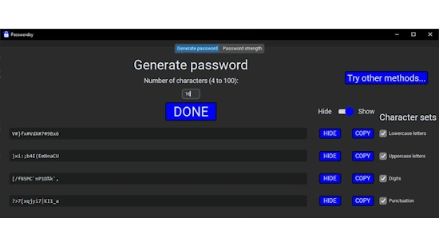
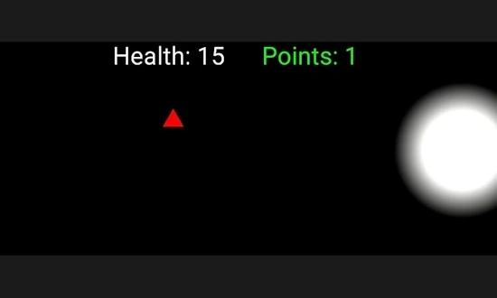

I am a 15-year-old who loves coding (especially web and game development) and who is constantly in pursuit of learning more stuff.
I have been coding since early Fall 2022. I've coded in HTML, CSS, JavaScript, Phaser, Python, and C# (in Unity).
Websites

Programs

Passwordsy
Password generator and password strength checker
Games

LIGHT GAME
You control a light that gets larger the faster you move.